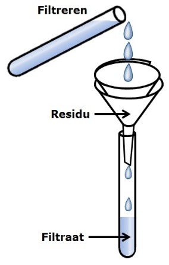
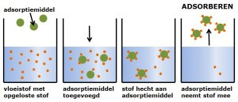
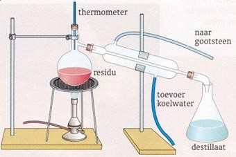
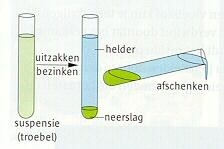

Introductie over scheidingsmethodes...
Introductie over scheidingsmethodes...
In de scheikunde heb je te maken met zuivere stoffen en met mengsels. Een zuivere stof is een stof die bestaat uit 1 soort moleculen. Een voorbeeld van een zuivere stof is bijvoorbeeld goud. De meeste stoffen die je tegenkomt zijn geen zuivere stoffen. Dit zijn mengsels. Een mengsel is een stof die bestaat uit meerdere soorten moleculen. Een voorbeeld hiervan is bijvoorbeeld melk
1. Is wijn een zuivere stof of een mengsel?
Een mengsel, wijn is namelijk een mengsel van alcohol, druivensap, suikers, water en nog wat andere bestandsdelen.
2. Is melk een zuivere stof of een mengsel?
Een mengsel, er zit namelijk vet, calcium en water in.
3. Is koffie een zuivere stof of een mengsel?
Een mengsel, het is namelijk een mengsel van koffiebonen en water.
4. Is poedersuiker een zuivere stof of een mengsel?
Een zuivere stof, het bestaat uit enkel en alleen glucose.
5. Is piepschuim een zuivere stof of een mengsel?
Een mengsel, het is een mengsel van een gas en een vaste stof.
6. Is een mengsel van poedersuiker en korrelsuiker een zuivere stof of een mengsel?
Een zuivere stof, het zijn namelijk allebei gewoon glucosemoleculen. Alleen de ene is gemalen suikerkorrels en de andere gewoon korrels.
Naast het verschil tussen zuivere stoffen en mengsels zijn er weer verschillende mengsels te onderscheiden. De verschillende soorten mengsels zijn hieronder weergegeven:
| Soorten mengsel | Uitleg |
|---|---|
| Oplossing | Een helder mengsel van een stof (kan zowel vaste stof, vloeistof als gas zijn) in een vloeistof (het oplosmiddel). Het is een mengsel waarin de opgeloste stof is opgedeeld in losse moleculen die gelijkmatig verdeeld zijn. Een oplossing kan best gekleurd zijn. |
| Suspensie | Een vaste stof die niet oplost in een vloeistof. Bijvoorbeeld modder, verf, krijtpoeder in water. Een suspensie is altijd troebel en zal na enige tijd ontmengen (de vaste stof zakt naar de bodem). |
| Emulsie | Vloeistof die niet oplost in een andere vloeistof. Er zweven dus als het ware druppeltjes van de ene vloeistof in de andere. Door een emulgator toe te voegen blijven de stoffen wel gemengd. Voorbeelden van emulsies die door een emulgator gemengd blijven zijn: boter, melk en crème. |
| Schuim | Een gas dat niet oplost in een vloeistof. Zoals de schuimkraag op een pilsje, dit is koolstofdioxide in bier. |
| Rook | Kleine deeltjes vaste stof die niet oplossen in een gas |
| Nevel | Kleine druppels vloeistof die niet oplossen in een gas |
1. Leg uit of je suiker van water kunt scheiden door filtratie.
Nee, suiker lost op in het water en kun je dus niet vast in handen krijgen als je het gaat filtreren.
2. Is zeewater een oplossing of een suspensie?
Een suspensie, in zeewater zitten vaak diertjes, zand, zeewier, enz.
Een oplossing is zoals hierboven al is uitgelegd een stof waarbij twee stoffen zijn gemengd en waar de moleculen gelijkmatig over het geheel verdeeld zijn. Als we kijken naar een oplossing zijn er ook verschillende soorten oplossingen:
Onverzadigde oplossing: Er kan nog meer stof oplossen
Verzadigde oplossing: De maximale hoeveelheid stof is opgelost
Onverzadigde oplossing: Niet alle stof is opgelost, want er is te veel
Naast de verschillende soorten oplossingen kunnen we ook spreken over de oplosbaarheid van stoffen. De oplosbaarheid is e hoeveelheid stof die op kan lossen in een bepaalde hoeveelheid oplosmiddel:
- Bij een oplossing van een vaste stof in een vloeistof geldt dat de oplosbaarheid toeneemt als de temperatuur toeneemt.
- Bij een oplossing van een gas in een vloeistof geldt dat de oplosbaarheid afneemt als de temperatuur toeneemt.
Men wilt oplossingen in sommige gevallen scheiden. Dit scheiden kan op verschillende manieren. Deze manieren noemen we scheidingsmethoden:
| Scheidingsmethode | Uitleg | Voorbeeld opstelling |
|---|---|---|
| Filtreren | Deze methode wordt gebruikt als je te maken hebt met een suspensies. Deze methode werkt met het verschil in deeltjesgrootte. De kleine deeltjes zullen door het filter heen gaan en de grotere deeltjes zullen in het filter blijven hangen. Het deel dat door de filter heengaat heet het filtraat en het deel dat in het filter blijft liggen heet het residu. |  |
| Indampen | Deze methode wordt gebruikt bij een oplossing. Hierbij worden mengsels gescheiden waarbij een vaste stof is opgelost in een vloeistof. Hierbij maakt men gebruik van het kookpunt van de verschillende stoffen. Het kookpunt van de ene stof ligt dan lager dan die van een andere stof. Als het kookpunt van de eerste stof wordt bereikt (van de vloeistof) zal deze stof gaan koken en langzaam overgaan in de gasfase. Na enige tijd blijft alleen de vaste stof over. | |
| Extraheren | Deze methode wordt gebruikt bij bijvoorbeeld thee en koffie zetten. Deze methode werkt met de oplosbaarheid. Als van een mengsel één stof wel oplost en de andere niet. Extraheren wordt vaak gebruikt in combinatie met filtreren. Bij het extraheren worden de geur- kleur en smaakstoffen uit bijvoorbeeld koffiepoeder of theeblaadjes gehaald. | |
| Adsorberen | Bij deze methode wil je de opgeloste stof uit een mengsel halen. Deze methode werkt door het verschil in hechtvermogen aan een adsorptiemiddel. Het adsorptiemiddel is een stof die je toevoegt om de opgeloste stof uit het mengsel te halen. Het hechten van de stof vindt plaats aan de oppervlakte. Adsorptiemiddelen hebben dan ook altijd een groot oppervlak om ervoor te zorgen dat alle opgeloste stof zich kan hechten. |  |
| Destilleren | Deze methode pas je toe als je een oplossing van twee vloeistoffen wilt scheiden. Deze methode werkt ook met het verschil in kookpunt. Net als bij indampen zal een van de stoffen veranderen in een gas. Het verschil is hier alleen dat je beide vloeistoffen wilt overhouden. Het gas zal opstijgen en door de opstelling heen verplaatsen. Bij de koeler wordt deze damp afgekoeld waardoor de damp condenseert (weer vloeibaar wordt). Deze gecondenseerde damp heet het destillaat. De overgebleven vloeistof heet het residu. |  |
| Bezinken | Deze methode wordt meestal gebruikt om een suspensie te scheiden. Deze methode kan ook gebruikt worden om mengsels te scheiden die niet in elkaar oplossen. Deze methode werkt met de dichtheid van een stof. De stof met de grootste dichtheid zal na verloop van tijd naar beneden zakken. Na het bezinken kun je decanteren. Dit is het afgieten van het mengsel. |  |
1. Op basis van welke stofeigenschap scheid je de stoffen bij filtreren? En wat is het verschil tussen zeven en filtreren?
Deeltjesgrootte; een filter is veel fijner (kleinere poriën/gaatjes) dan een zeef, dus je kan hele kleine deeltjes uit een oplossing halen.
2. In een bekerglas met een flinke hoeveelheid water doet men een beetje zout, krijt en zand. Het krijt en het zand lossen niet op in water, in tegenstelling tot het zout. Het geheel wordt goed geroerd en gefiltreerd. Waaruit bestaat het filtraat en waaruit bestaat het residu?
Filtraat: een zoutoplossing
Residu: krijt en zand
3. Wat is het verschil tussen indampen en destilleren?
Bij indampen houd je één stof over en verdampt er één stof die uiteindelijk opgaat in de ruimte.
Bij destilleren scheid je een mengsel waarbij je twee zuivere stoffen kunt overhouden.
4. Een mengsel van chloroform en aceton wordt langzaam gedestilleerd.
Het kookpunt van deze stoffen is achtereenvolgens 62 0C en 56 0C.
Uit welke stof zal het residu vooral bestaan en uit welke stof het destillaat?
Het residu bestaat uit chloroform en het destillaat uit aceton.
5. In rode rozen zit de kleurstof anthocyanidine, dit zorgt voor de rode kleur van de bloemen. Deze kleurstof lost goed op in spiritus. Stel een werkplan op om het anthocyanidine uit de rode rozen te halen (tip: maak geen gebruik van adsorptie). In het werkplan vermeld je welke scheidingsmethoden je gebruikt en leg je bij elke scheiding uit wat er gebeurt.
Extraheren à in een bekerglas met spiritus voeg je blaadjes van de rode rozen toe.
Filtreren à De blaadjes blijven achter in je filter. Dit heet het residu. Je filtraat bestaat uit een mengsel van spiritus en de kleurstof anthocyanidine.Wil je het in vaste vorm?
Indampen à spiritus verdampt en je kleurstof blijft over.